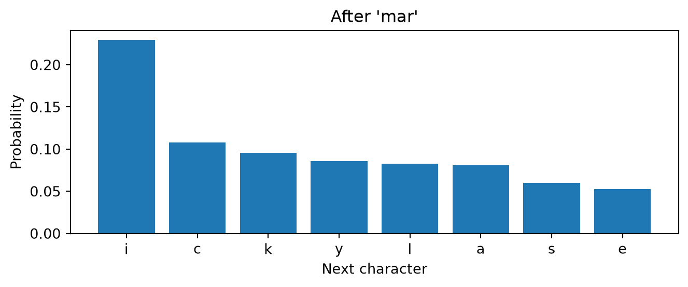

From next-character prediction to name generation (optional)
A companion to Lectures 14 and 15
Author
Marcel Turcotte
Published
November 11, 2026
This material will not appear on course tests.
How could a classifier invent a name? Train it to predict the next character, sample from its prediction, and use that character to make the next prediction.
Students often ask whether CSI 4106 covers large language models (LLMs). Studying language models in depth draws on representation learning, word embeddings, recurrent neural networks, transformers, pretraining, and fine-tuning. These notebooks use the feedforward and convolutional networks from Lectures 14 and 15 to illustrate self-supervised learning and autoregressive generation, two ideas behind LLMs.
The second notebook applies the same approach to passages from Shakespeare. Tiny Shakespeare notebook
From a name to training examples
A context holds the characters that precede the target. At the start of a name, fill the context with .. After the last letter, use . as the target so the model can learn when to stop. With a context of three characters, emma gives these examples.
Context
Target
...
e
..e
m
.em
m
emm
a
mma
.
The names provide their own prediction targets, including the boundary we add after each name. This is self-supervised learning.
Prepare the data
Run from a fresh kernel with NumPy, Matplotlib, and TensorFlow with Keras. The setup loads distinct spellings from a list drawn from 2018 US Social Security Administration data. It uses the bundled file or downloads the pinned copy. We split whole names before building contexts so all examples from each name stay together. makemore dataset
TensorFlow 2.21.0, Keras backend: tensorflow
Whole-name split: 23,595 training, 2,949 validation, 2,950 test
The model uses eight characters of context. Each character has an integer ID and a one-hot vector, with one entry set to 1. The input shape (8, 27) gives eight positions and 27 channels for the letters and .. The target is the ID of the following character.
Training inputs: (168962, 8, 27) Targets: (168962,)
Predict the next character
The feedforward model flattens the context, applies a ReLU layer, and returns a logit for each possible next character. Cross-entropy rewards the model for assigning high probability to the observed next character. The targets are integer IDs and Keras receives the logits directly.
An influential neural language model used a fixed number of preceding words and learned word vectors jointly with its prediction network. Here we apply that fixed-context idea to one-hot characters. Bengio, Ducharme, Vincent, and Jauvin (2003)
prompt ="mar"probabilities = next_probabilities(mlp, prompt)top = np.argsort(probabilities)[-8:][::-1]labels = ["end"if index == BOUNDARY else vocabulary[index] for index in top]fig, ax = plt.subplots(figsize=(7, 3))ax.bar(labels, probabilities[top])ax.set(xlabel="Next character", ylabel="Probability", title=f"After '{prompt}'")fig.tight_layout()plt.show()

Sample a name
During training, the context comes from the data. During generation, append a sampled character and use the most recent eight characters to predict again. This feedback loop is autoregressive generation. Each name ends when we sample . or reach the limit on new characters.
A width-three filter looks for patterns in neighboring characters and reuses its weights across the context. The convolution turns (8, 27) into (6, 32). Flattening keeps the positions of the filter responses available to the Dense layers. Both models train for twelve epochs on the same examples.
convolutional: 30,811 parameters
convolutional: marrish, marylyn, mariyah, marchar, marquovi, maria
Try a different sampling temperature
The preceding samples use temperature 1. A lower temperature concentrates probability on the leading choices, while a higher one spreads it out. Which setting produces more varied continuations of mar?
for temperature in (0.6, 1.4):print(f"Temperature {temperature}") show_samples(mlp, prompt, temperature=temperature)
Temperature 0.6
feedforward: marley, marcylie, marius, marian, marose, marynn
Temperature 1.4
feedforward: marshos, marynn, marietti, marelas, marrhyni, marj
Compare held-out predictions
The table reports cross-entropy in nats per target on the same held-out names for both networks. Lower is better. The bigram reference predicts the next character from counts of what follows the previous character in training.
Show final evaluation code
bigram_counts = np.ones((VOCAB_SIZE, VOCAB_SIZE))np.add.at(bigram_counts, (train_contexts[:, -1], y_train), 1)bigram_probabilities = bigram_counts / bigram_counts.sum(axis=1, keepdims=True)bigram_test_loss =-np.log(bigram_probabilities[test_contexts[:, -1], y_test]).mean()test_losses = {"Bigram": bigram_test_loss}for label, model in (("Feedforward", mlp), ("Conv1D", cnn)): test_losses[label] = model.evaluate(X_test, y_test, batch_size=BATCH_SIZE, verbose=0)print(f"{'Model':<15}{'Test cross-entropy (nats/target)':>33}")for label, loss in test_losses.items():print(f"{label:<15}{loss:>33.3f}")
Model Test cross-entropy (nats/target)
Bigram 2.449
Feedforward 2.049
Conv1D 2.051
References
Bengio, Y., Ducharme, R., Vincent, P., and Jauvin, C. (2003). Journal of Machine Learning Research, 3, 1137–1155. A Neural Probabilistic Language Model.